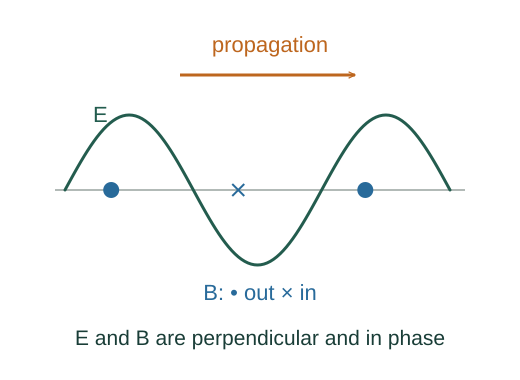

Derive electromagnetic-wave intensity
The Poynting vector describes electromagnetic energy flux. For a sinusoidal plane wave, averaging its squared field over a cycle gives the factor one half.
What the symbols mean
𝐒: instantaneous energy flux (W/m²); Emax, Bmax: peak field magnitudes; ⟨S⟩: time-average intensity.
When this applies
Sinusoidal travelling plane wave in vacuum, with electric and magnetic fields in phase and perpendicular.
Developing the argument

Relate the wave fields
For a vacuum travelling wave the Maxwell curl laws require E = cB for the amplitudes and instantaneous co-phased values.
A closer lookHow do Maxwell’s equations produce a travelling wave? ↗Derive the electromagnetic wave speed from Maxwell’s equationsUse electromagnetic energy flow
The field energy balance identifies the Poynting vector. For perpendicular plane-wave fields, its magnitude is EB/μ₀.
Rewrite the constants
Since μ₀ε₀c² = 1, the instantaneous flux becomes ε₀cE². A sinusoidal field gives E² = Emax² cos²(phase).
Average a full cycle
The mean of cos² over one period is 1/2. RMS field is Emax/√2, so the same average can be written without an extra half using Erms.
A worked example
A vacuum plane wave with peak electric field 100 V/m has average intensity about 13.3 W/m².
Derivation behind this calculation ↗A point to keep straight
The factor ½ belongs to peak sinusoidal amplitudes. Do not apply it a second time to RMS field values.
Check the assumptions and derivation ↗